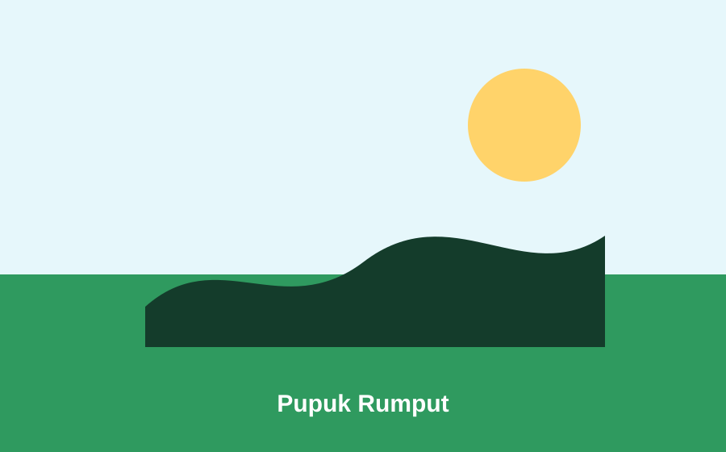
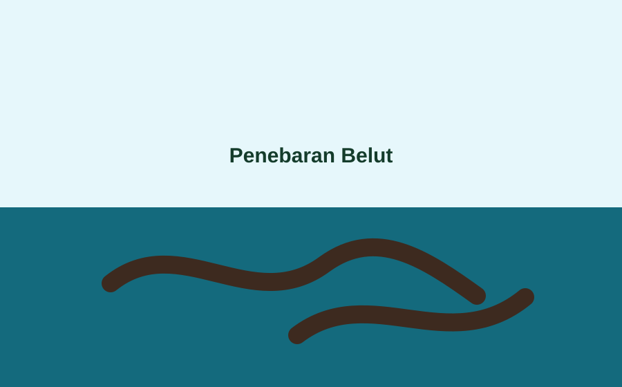
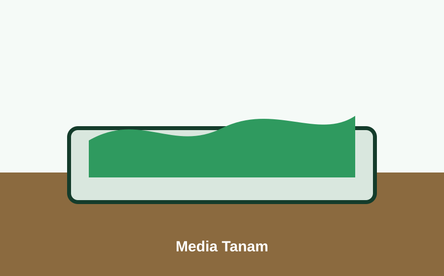
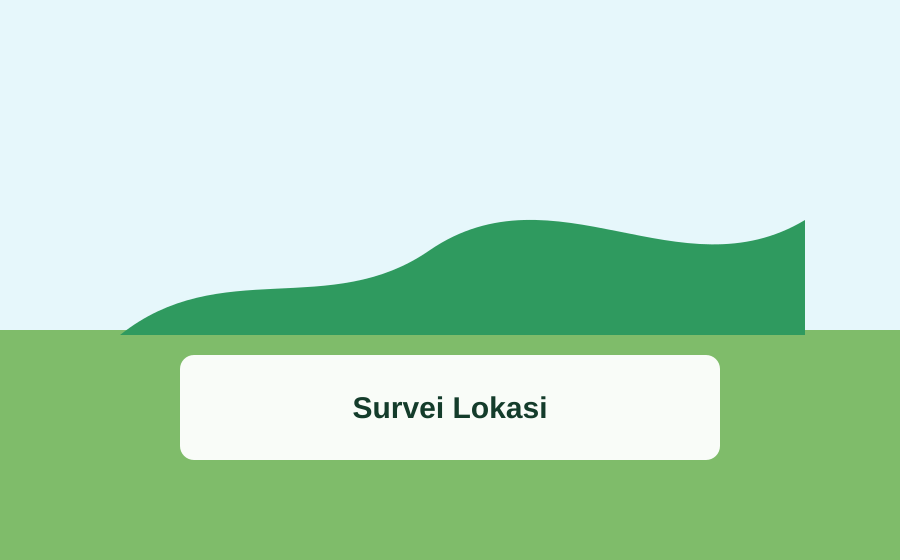

Makanan Ringan
Keripik Singkong Waru Barat
Contoh data UMKM desa yang dapat diganti dengan nama usaha, pemilik, alamat, kontak, dan foto asli.
- Pemilik
- Nama Pemilik UMKM
- Lokasi
- Dusun Placeholder
UMKM Desa
Ganti data dummy ini dengan nama usaha, pemilik, foto, alamat, kontak, dan deskripsi UMKM asli.
Data UMKM
Masukkan foto asli, nama pemilik, alamat dusun, nomor pemesanan, dan deskripsi singkat agar halaman ini bisa menjadi katalog desa.

Makanan Ringan
Contoh data UMKM desa yang dapat diganti dengan nama usaha, pemilik, alamat, kontak, dan foto asli.

Produk Pangan
Produk olahan lokal yang dapat ditampilkan sebagai potensi ekonomi warga desa.

Kerajinan
Placeholder untuk usaha kerajinan atau produk kreatif yang ada di Desa Waru Barat.

Kuliner
Contoh usaha kuliner warga yang bisa ditampilkan lengkap dengan kontak pemesanan.
Promosi Desa
Jika setiap UMKM punya kontak pemesanan, tambahkan linknya di data agar pengunjung bisa langsung menghubungi pemilik usaha.